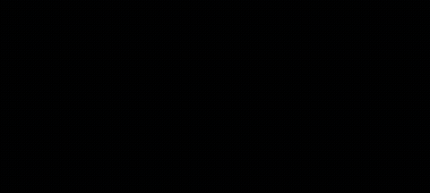
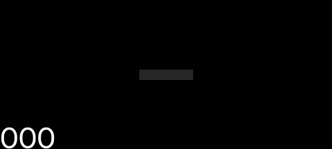
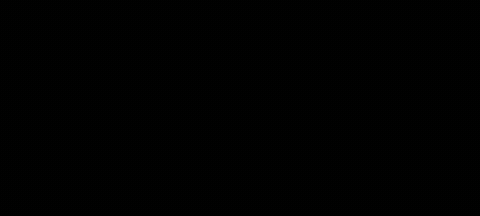
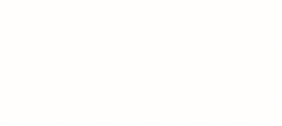
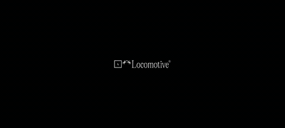
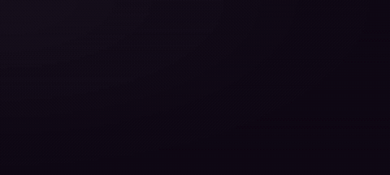
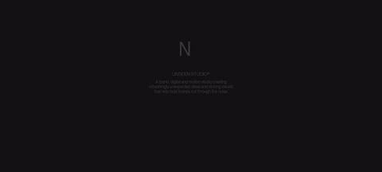
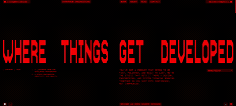
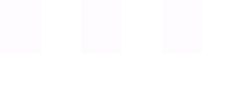
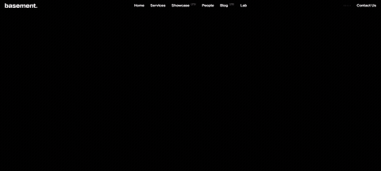

Craft Atlas · Now Screening
Motion Reel
Twelve short loops captured live from the best motion sites on the web — roughly ten seconds each, recorded straight off the running experience. Every one is here because motion never survives a static screenshot: the scroll-scrubbed 3D, the magnetic cursors, the blur-to-focus type, the physics. A still frame shows you the layout; these clips show you the craft.
- Clips
- 12
- Runtime
- ~10s ea.
- Source
- Live
- Format
- GIF · WebM









